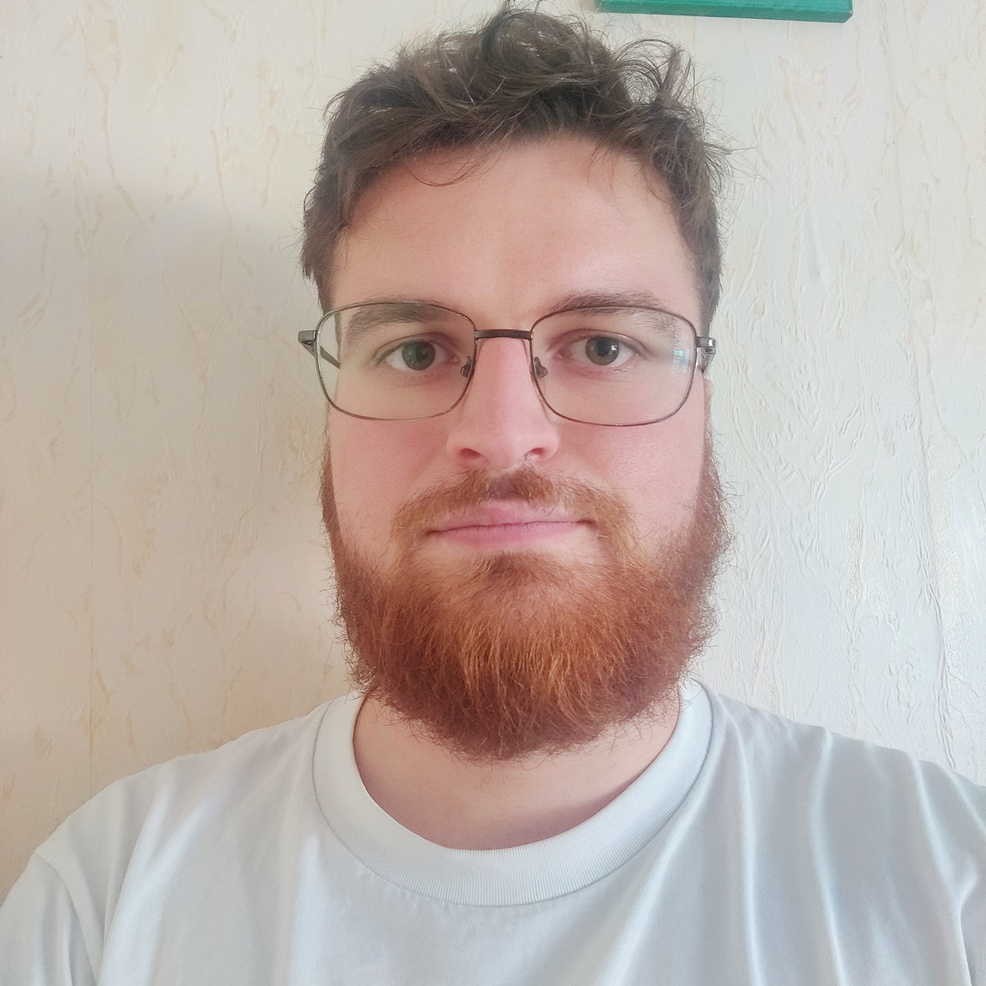

Professional Contact Personal Contact GitHub LinkedIn
I am a first-year PhD student in the Titane team at Inria Sophia Antipolis, France.
My research is a joint project between Inria,
under the supervision of Florent
Lafarge,
and BRGM, under the supervision of Simon Lopez.
My work focuses on reconstructing multiple 3D models from implicit representations, with a particular
interest in geological applications.
I graduated from the University of Poitiers in 2025 with a Master's degree in Computer Science
(EUR Software Design and Development), with a focus on computer graphics.
I completed my final internship at XLIM (3 months) and the Nagoya Institute of Technology (2 months),
working on reconstructing 3D models of grains from multiple scans taken at different times.